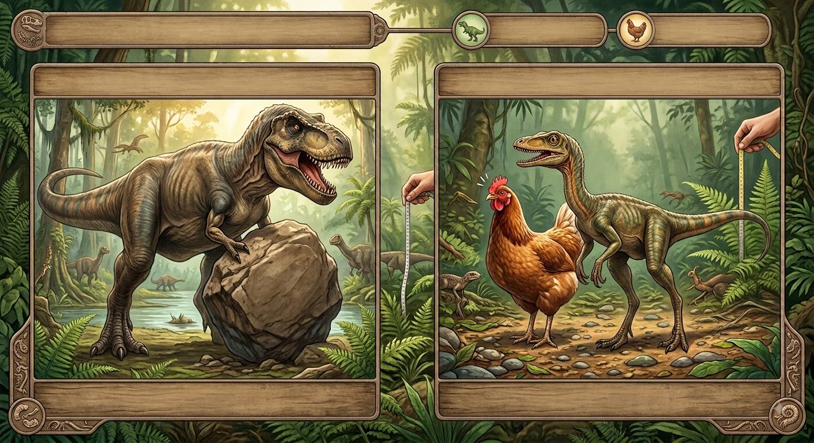

Meu primeiro post
Por: Alunos do integral
🦖 Braços do T-Rex: Apesar de parecerem pequenos e fracos em comparação ao resto do corpo, os braços do Tyrannosaurus rex eram incrivelmente fortes! Estima-se que cada braço conseguia levantar mais de 200 kg. 🐔 Mini Dinossauro: Nem todo dinossauro era um gigante assustador! O Compsognathus, por exemplo, era um predador que tinha o tamanho aproximado de uma galinha..